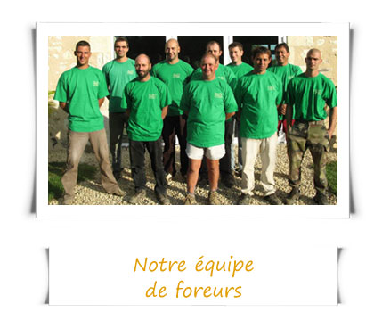
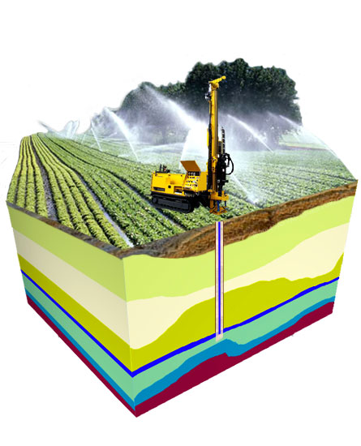
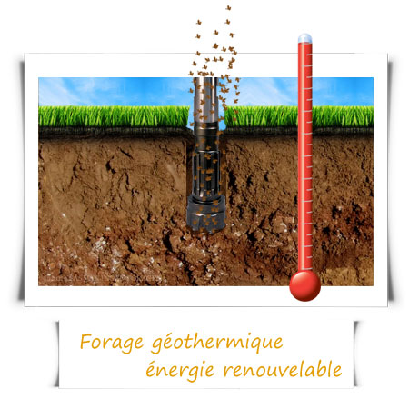
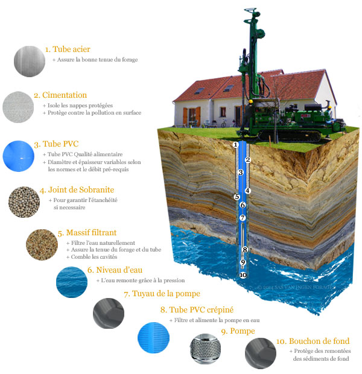
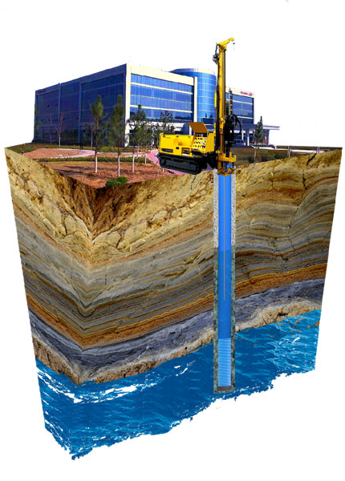
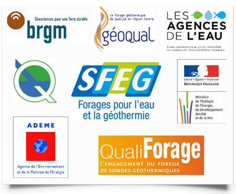
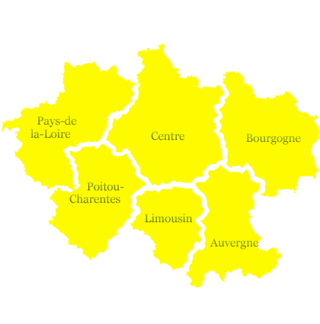

Particuliers, agriculteurs, industriels et collectivités — Van Ingen Forages vous garantit l'accès à l'eau et à l'énergie du sous-sol en Centre-Val de Loire et régions limitrophes.
Demander un devis Nos prestations
Depuis 1989, la SAS Van Ingen Forages est spécialisée dans la recherche d'eau et le forage pour les particuliers, professionnels, agriculteurs et collectivités. Basés à Bossay-sur-Claise en Indre-et-Loire, nous intervenons sur un large quart centre-ouest de la France.
Notre savoir-faire couvre l'ensemble du processus : de l'étude hydrogéologique à la réalisation du forage, en passant par l'équipement et la mise en service. Nous garantissons le résultat de nos implantations selon les secteurs géologiques.
Des solutions adaptées à chaque besoin en eau et en énergie géothermique

Réalisation de forages pour l'irrigation des cultures, l'abreuvement du bétail et les besoins en eau des exploitations agricoles. Dimensionnement adapté à votre consommation.

Forages géothermiques pour le chauffage et la climatisation de votre habitation ou bâtiment. Une énergie renouvelable et économique, puisée directement dans le sous-sol.

Forages pour l'alimentation en eau de votre maison ou l'arrosage de votre jardin. Eau de source, eau potable — nous recherchons et captons la ressource la plus adaptée.

Captages d'eau pour les collectivités et l'industrie. Piézomètres, forages de reconnaissance et études hydrogéologiques pour sécuriser vos ressources en eau.
Des labels reconnus qui garantissent la qualité de nos interventions

Qualiforage — SFEG — Géoqual — BRGM — ADEMENous intervenons dans un large quart centre-ouest de la France

Un projet de forage ? Demandez un devis gratuit et personnalisé
Bossay-sur-Claise (37)
Indre-et-Loire
Appelez-nous pour un devis personnalisé